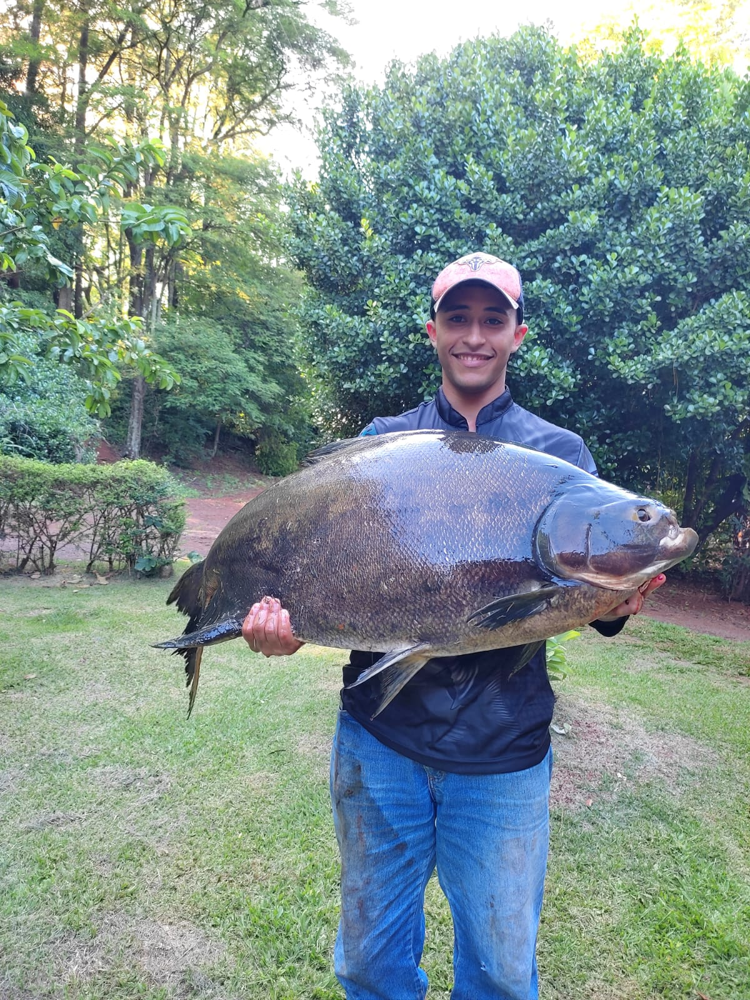

Eu sou o Silvio Henrique e adoro estar em contato com a natureza. Pescar é uma das minhas grandes paixões, me trazendo paz e uma sensação de tranquilidade. Também gosto muito de andar de bicicleta, seja para explorar novos lugares ou para sentir a liberdade de pedalar ao ar livre. A academia faz parte da minha rotina, porque acredito que cuidar do corpo e da mente é essencial para uma vida equilibrada. Gosto de manter um estilo de vida saudável, buscando sempre um bom equilíbrio entre o prazer e o bem-estar. Para mim, cada momento que passo pescando, pedalando ou treinando me ajuda a me sentir mais conectado comigo mesmo. Valorizo as coisas simples e adoro aproveitar cada pequeno momento do dia. Essas atividades são minha forma de recarregar as energias e viver com mais disposição. A natureza, o exercício e o lazer são parte do que me faz feliz.
Nas horas vagas gosto de programar e pescar
